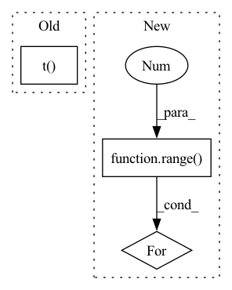

Pattern ID :39218
Before Change
// pos [num, num_priors]
// conf_data [num, num_priors, feature_dim]
conf_data = conf_data / torch.norm(conf_data, dim=2, keepdim=True) // [num, num_priors, feature_dim]
batch_conf = conf_data.view(-1, self.num_classes).mm(self.imprinted_matrix.t() ) * self.scale // [n_way, num_classes]
// Compute max conf across batch for hard negative mining (logit-combined)
batch_obj = obj_data.view(-1, 2) // [n_way*n_shot*num_priors, 2]After Change
// pos [num, num_priors]
// conf_data [num, num_priors, feature_dim]
features = [conf_data.view(-1, self.num_classes)]
for i in range(3 ):
new_features = (self.denselayer1, self.denselayer2, self.denselayer3)[i](*features)
features.append(new_features)
batch_conf = new_features * self.scale // [n_way, num_classes]
In pattern: SUPERPATTERN
Frequency: 3
Non-data size: 3
Instances Fragment ID: 111407703
Project Name: ze-yang/context-transformer
Commit Name: fdad2f0570a1a57d0925ef2ff8b6a15611f910b5
Time: 2019-03-08
Author: 981435961@qq.com
File Name: layers/modules/multibox_loss_combined_imprinted.py
M Class Name: MultiBoxLoss_combined
N Class Name: MultiBoxLoss_combined
M Method Name: forward(4)
N Method Name: forward(4)
M Parent Class: nn.Module
N Parent Class: nn.Module
M File Name: layers/modules/multibox_loss_combined_imprinted.py
N File Name: layers/modules/multibox_loss_combined_imprinted.py
M Start Line: 71
M End Line: 107
N Start Line: 108
N End Line: 112
Before Change
// gess direction
direct = 1 // or -1 if CA is berfore
if direct:
phis = torch.vstack(torch.tensor([None for i in range(len(N_mask))])).t()
else:
phis = torch.vstack(torch.tensor([None for i in range(len(N_mask))])).t()
// calc number of negatives and return the highest mirror
neg_phis = (phis < 0).long().sum(axis=-1)After Change
phis_count = []
for i in range(cs.shape[0]):
phis = []
for j in range(1 , cs.shape[1]-1):
phis.append( get_dihedral_torch(cs[i,j-1], ns[i,j], cs[i,j], n[i,j+1], cs[i,j+1]) )
phis_count.append( (torch.tensor(phis)<0).float().sum() )
return preds[torch.argmax(torch.tensor(phis_count))] Fragment ID: 111407705
Project Name: lucidrains/alphafold2
Commit Name: 1b677161a6a5c024c430e8726702cb132d7175d7
Time: 2021-01-06
Author: ericacaide1@gmail.com
File Name: utils.py
M Class Name: AnonimousClass
N Class Name: AnonimousClass
M Method Name: fix_mirrors_torch(3)
N Method Name: fix_mirrors_torch(3)
M Parent Class:
N Parent Class:
M File Name: utils.py
N File Name: utils.py
M Start Line: 147
M End Line: 154
N Start Line: 147
N End Line: 157
Before Change
llf_idx = torch.stack([position-1, position, position+1], dim=0).to(torch.long)
llf_idx[0] = llf_idx[0] * (llf_idx[0] != -1) + (position+2) * (llf_idx[0] == -1)
llf_idx[2] = llf_idx[2] * (llf_idx[2] != max_seq_length) + (position-2) * (llf_idx[2] == max_seq_length)
features = embeddings.word_embeddings(llf_idx.t() ).view(-1, 3 * embeddings.word_embeddings.weight.size(1))
return features
def max_pooling(self,After Change
llf_idx[0] = llf_idx[0] * (llf_idx[0] != -1) + (position+2) * (llf_idx[0] == -1)
llf_idx[2] = llf_idx[2] * (llf_idx[2] != max_seq_length) + (position-2) * (llf_idx[2] == max_seq_length)
features = []
for i in range(3 ):
features.append(embeddings[torch.arange(embeddings.shape[0]), llf_idx[i]])
features = torch.cat(features, dim=-1)
return features
Fragment ID: 111407704
Project Name: thu-keg/omnievent
Commit Name: 05fddb46f7748d3f136defbfd48bf9b6f7c1360b
Time: 2022-12-23
Author: penghao20170136@163.com
File Name: OmniEvent/aggregation/aggregation.py
M Class Name: DynamicPooling
N Class Name: DynamicPooling
M Method Name: get_lexical_level_features(4)
N Method Name: get_lexical_level_features(4)
M Parent Class: nn.Module
N Parent Class: nn.Module
M File Name: OmniEvent/aggregation/aggregation.py
N File Name: OmniEvent/aggregation/aggregation.py
M Start Line: 184
M End Line: 187
N Start Line: 184
N End Line: 190